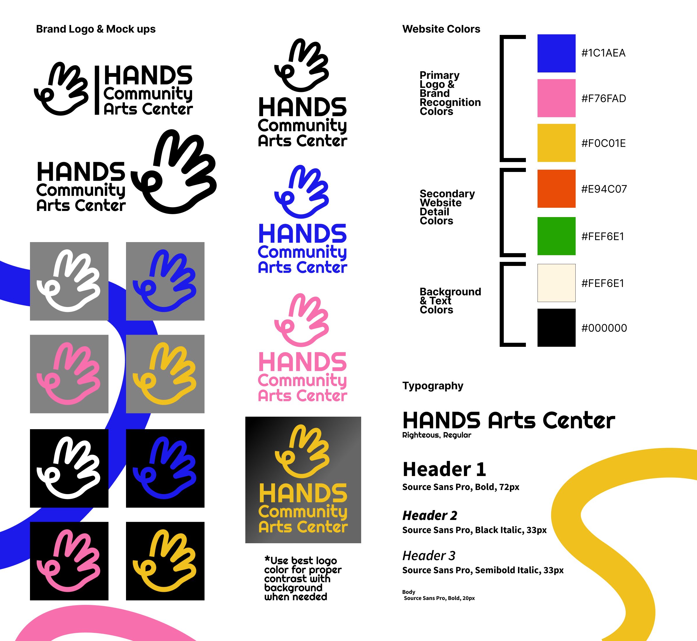
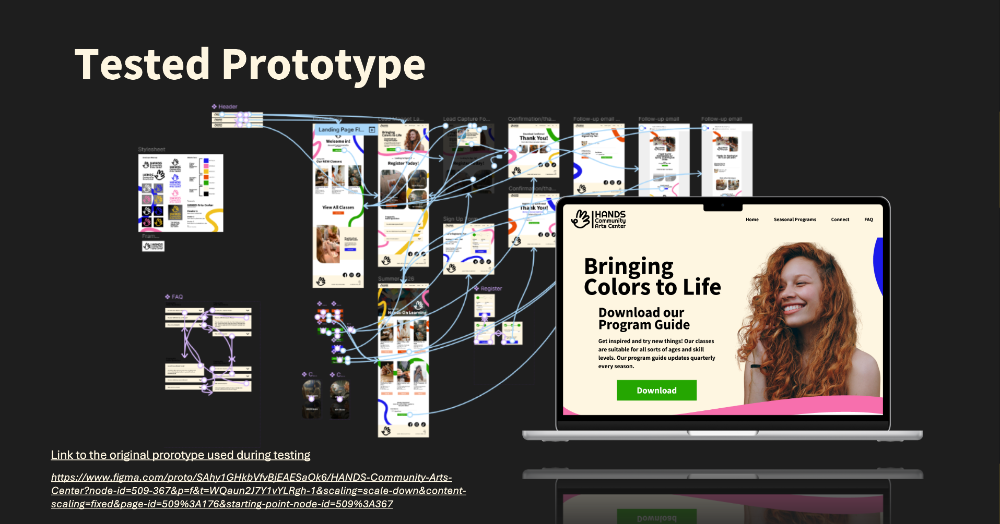
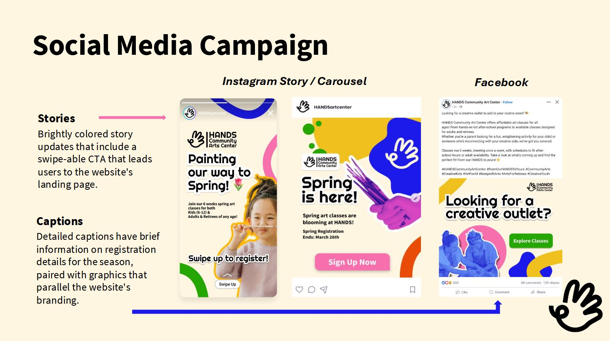
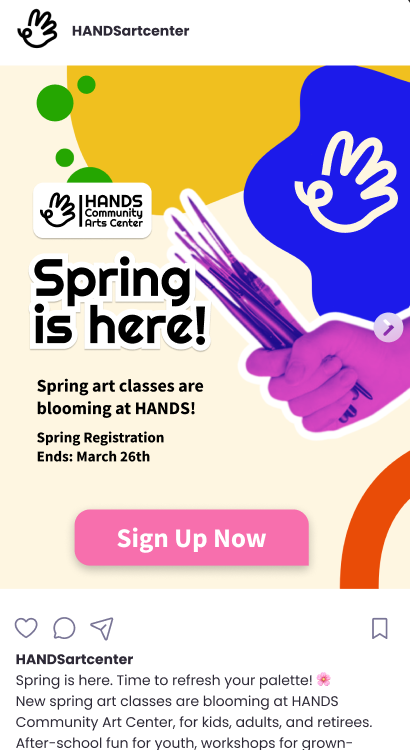
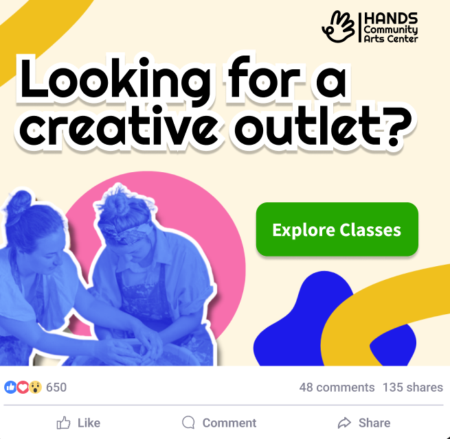

HANDS Art Center Case Study
HANDS Art Center
Case Study Details
This website UX case study focuses on improving the overall user experience for HANDS Community Arts Center through accessible design and a streamlined lead generation funnel. In this Agile group, I worked as the Lead Designer, helping my team members work through the toughest UX issues. The primary goal was to guide users toward class registration and program discovery while meeting WCAG accessibility standards. Design decisions were validated through moderated usability testing to ensure the experience worked for real users before final implementation.
Download Case Study PDF
HANDS Art Center
Accessibility & Branding Considerations
Large text readability was paired with accessible branding colors to support users with color blindness, following WCAG standards. Color contrast and typography choices were intentional design decisions to ensure inclusivity across all user groups. These standards were applied site-wide to create a consistent and welcoming experience for all visitors.

HANDS Art Center
Observations & Insights
Navigation was simplified through a site-wide search bar system with an easy to navigate user flow guiding users to classes based on gathered research through user testing. Users can browse by age group and skill level, making it straightforward to find the right program. A frequently asked questions section was added to help users find answers about programs before contacting staff members, reducing unnecessary back and forth and supporting independent decision making.

HANDS Art Center
Recommendations
The lead generation funnel moves users from discovery to conversion through a clear sequence of touchpoints. The journey begins when a user lands on the HANDS website and downloads the seasonal program catalog. They then receive a confirmation email with the catalog, browse for a class by age group and skill level, and begin the three step registration process. Each stage was intentionally designed to reduce drop off, build user confidence, and guide users toward enrollment without friction.

HANDS Art Center
User Feedback
Two moderated usability testing sessions were conducted remotely through Teams using a mid-fidelity prototype. Participants completed three key tasks: downloading the catalog, reviewing the confirmation email, and finding and registering for a class. Navigation and class categories were confirmed to be working well and remained unchanged. Messaging around the catalog download was flagged for clarity and updated accordingly. The registration flow was confirmed as easy to complete but needed clearer feedback to reassure users their actions were successful. To support conversion, emails are personally tailored to users for downloadable content and class registration, ensuring every touchpoint feels relevant and intentional.

HANDS Art Center
Citations
Lead Researcher: Kelsey Leigh Hensley
Lead Designer: Jessica Perlin
Lead Test Engineer/Documenter: Destiny Lawrence